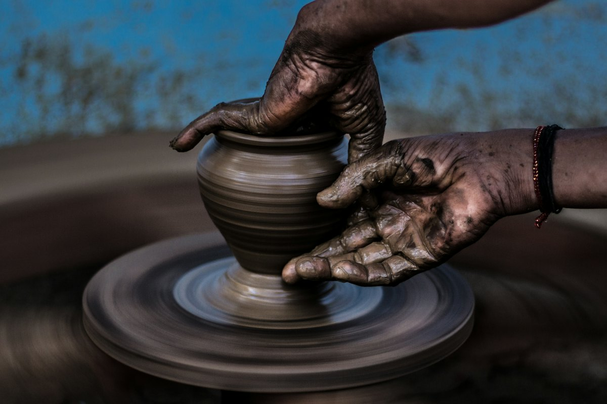
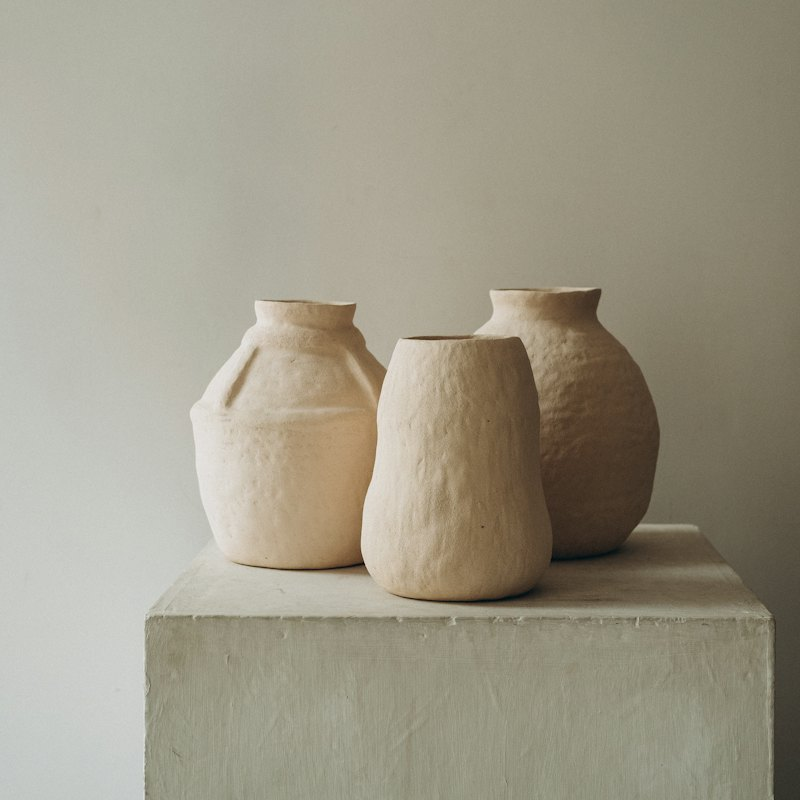
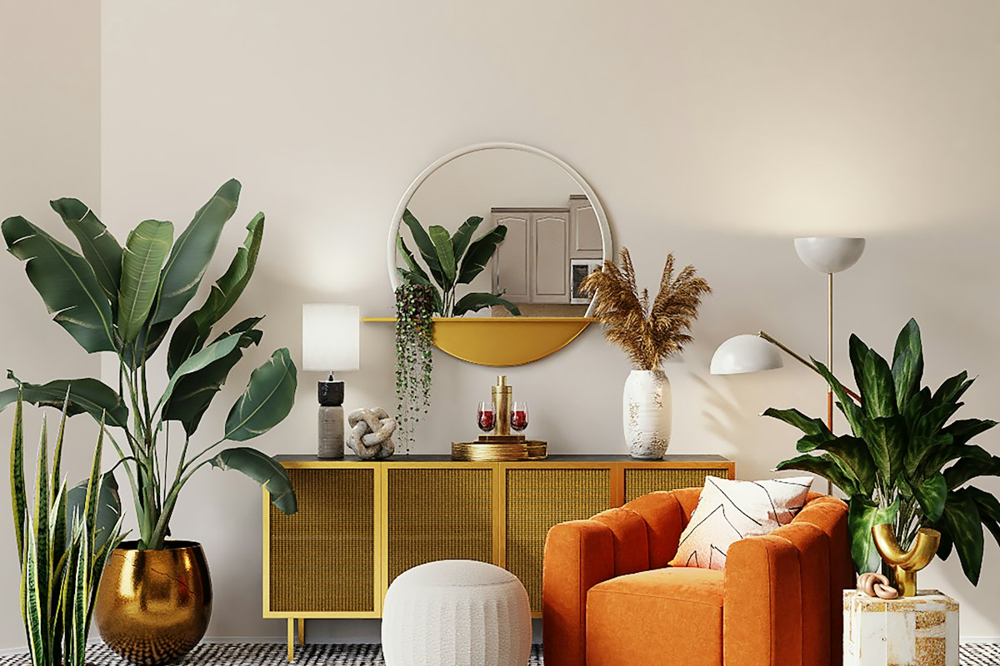

The studio
Two potters, one kiln, and a lot of clay
Kiln & Kettle is June and Ari Calder, working out of a converted mill unit since 2019. Everything in the shop is made by one of us, start to finish.

How it's made
A mug takes three weeks
Not three weeks of work, but three weeks of waiting: for the clay to firm up, for the piece to dry, and for each of two firings to heat up and cool down. We make in batches of a few dozen so nothing is rushed.
All tableware is food safe, and mugs, plates and bowls are dishwasher safe. Vases are glazed inside, so they hold water.

Throw
Each piece is shaped on the wheel, or by hand for the vessels.
Trim and handle
Once leather-hard, we trim the foot and pull handles by hand.
Bisque fire
A first firing to 1,800 °F turns dry clay into pottery.
Glaze fire
Dipped in our own glazes and fired to 2,232 °F. Then we wait.
Fresh from the kiln
Newest pieces

Visit and learn
Open studio Saturdays and wheel classes
Come by 14 Mill Yard on Saturdays between 10 and 2 to pick up orders, browse seconds at a discount and see what's on the wheel.
Want to try it yourself? Our two-hour intro class runs three times a week, for up to six people.